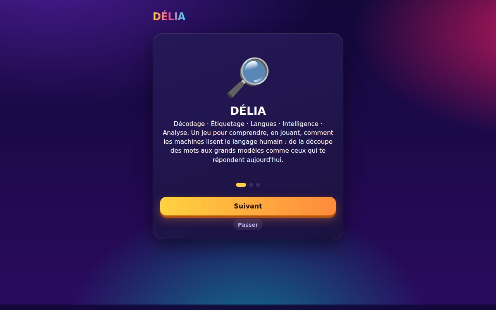

DÉLIA — apprendre le TAL en jouant
Décodage · Étiquetage · Langues · Intelligence · Analyse. Une application web qui rend la linguistique computationnelle et le TAL accessibles sans prérequis en informatique.
- Période
- Août – sept. 2026
- Type
- Projet personnel
- Format
- Application web mono-fichier, hors ligne
- Public
- Étudiants, curieux, enseignants

Pourquoi ce projet
Je viens des sciences du langage et je suis arrivé au TAL par ce chemin. Les ressources que j'aurais voulu trouver à ce moment-là n'existaient pas vraiment : soit des cours de linguistique sans code, soit des tutoriels de code sans linguistique. DÉLIA essaie de tenir les deux.
Le principe
Un parcours progressif par chapitres, sur le modèle des applications d'apprentissage du code : chaque leçon alterne une notion courte et une question, avec série quotidienne, badges et projets guidés en fin de chapitre.
Contenu
De la tokenisation aux LLM : morphologie, syntaxe, étiquetage morphosyntaxique, n-grammes, distance de Levenshtein, plongements, TF-IDF, attention, reconnaissance d'entités nommées, RAG, hallucinations et biais des modèles. Un dossier est consacré aux langues africaines et au TAL à faibles ressources, un angle presque absent des ressources pédagogiques existantes.
Ce qui distingue le projet
- Un laboratoire interactif où l'on manipule les concepts plutôt que de les lire : tokeniseur en direct, calcul de distance d'édition, similarité cosinus, tests d'expressions régulières.
- Des chapitres Python (16 leçons) et programmation orientée objet (7 leçons) exécutés directement dans le navigateur grâce à Pyodide.
- Aucune dépendance, aucun serveur, aucune donnée collectée : tout tient dans un seul fichier HTML.
JavaScript · HTML/CSS · Pyodide